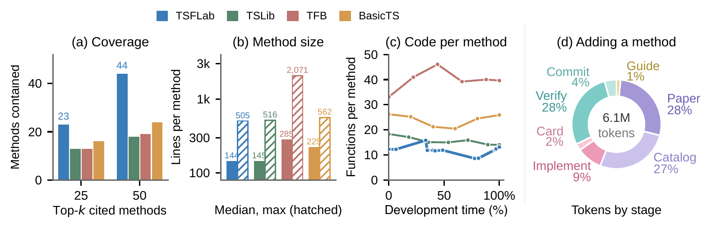

A catalog that maintains itself
Coverage Using TSFLab, we integrated 323 TSF models and compiled 93 datasets, along with 71 model units that can be reused for autoresearch. TSFLab contains 44 of the 50 most cited methods, compared with 29 across the three other codebases combined. The catalog combines established baselines with recent methods that have official code, reducing the integration needed to begin a comparison.
Compact implementations Broader coverage accompanies compact model implementations. The median implementation has 144 lines, close to TSLib's 145, while the largest has 505 lines, compared with 2,071 in TFB. Shared units consolidate common computations, and method specifications handle construction and parameter requirements outside model logic.
Maintenance through reuse As the catalog grows, extracting shared units helps control code per method: one extraction reduced the average function count from 11.9 to 8.6. A separate refactor reduced maximum function complexity from 20 to 9 while preserving bit-identical parameters, outputs, and gradients on reference cases for all 323 methods. Research sessions also expose reusable fixes. Missing guidance, manual configuration, repeated log polling, and premature test access led to instruction and runner updates; all 17 initial usability failures were repaired before integration.
Integration beyond model code Model implementation accounts for only 9% of method-intake tokens. Source reading, catalog search, and verification account for 28%, 27%, and 28%, respectively. Efficient integration therefore requires reusing knowledge and verification evidence as well as code. Knowledge cards retain these findings, helping later agents locate suitable methods and units without repeating the same investigation.

Entry instructions and skills, reproduction task details, metric definitions, and API prices are in the paper's appendices.